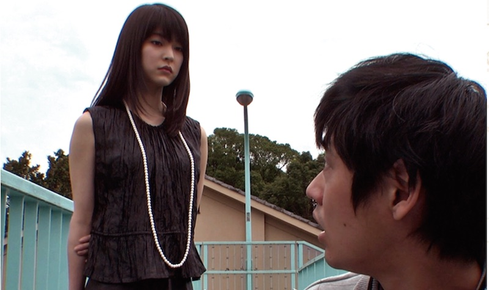
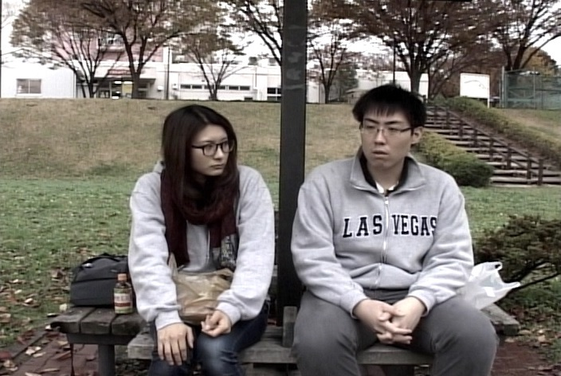
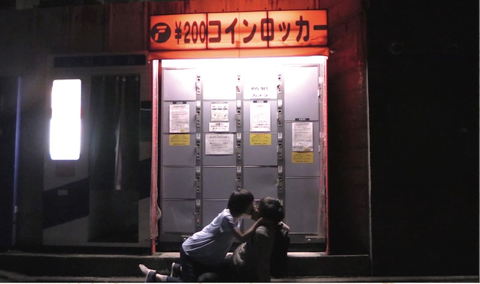
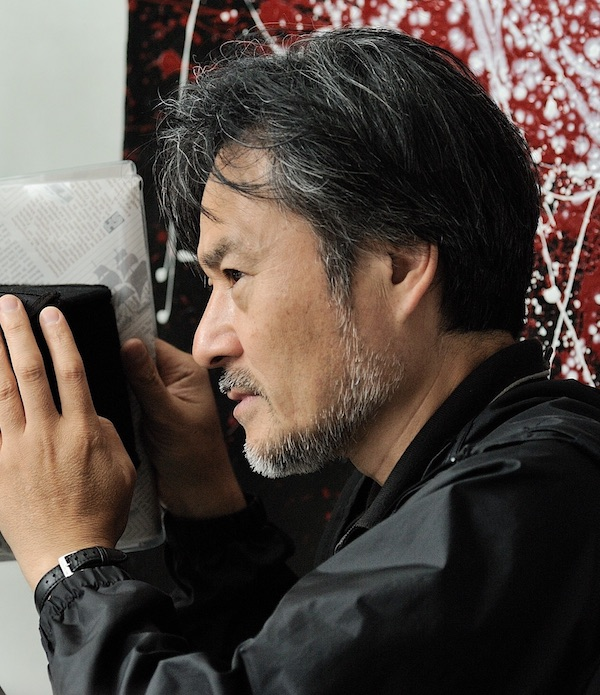
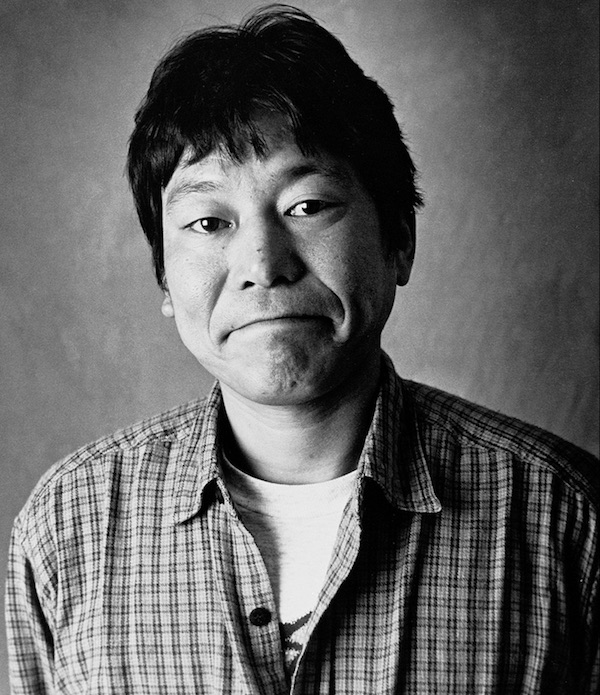
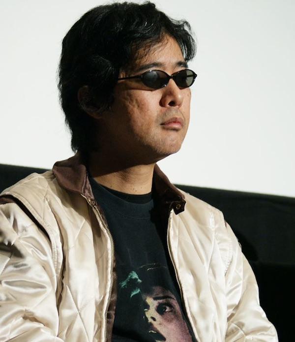

Expectations of the new directors 2016
9/25(Sun) 12:45
It will be screened the three films that were selected from among the public offering independent films. Kanazawa Film Festival will choose the expectation of New Director Award as Best Film, also Audience Award is chosen by audience vote, and the starring actor award.
Requiem for the crazy world

2015/88min
Director, Screenplay, Editer: Kei Ota
Starring: Abe Junya, Azuma Ayu, Yamamura Shinya, Nagasato Kentaro, Takayasu Komiya
Boy Meets Girl. However, the man is a random attacker, the woman is a terrorist. Man vows to destroy the world for the woman, he will decisive action the terror "One killing per one person". "Everything is bad because of capitalism!!"
Kei Ota
He was born 1968 in Osaka. While continuing worthless salaryman life for 20 years, he has been thinking about the movie in his head. Gradually, the reality has been eroded in the movie, I have taken this kind of movie. It is one of the film his profile. Please see it.
Goodbye, BAD SAMURAI

2016/61min
Director, screenplay, starring: Daisuke Ono
Starring: Honma Reon, Ayumi Kuroki, Akane Tominaga
A director had 1.1 million yen debt for the first time taken the independently produced film "BAD SAMURAI", and he has falling down. The director is Daisuke Ono, this film is a autobiography movie that he starring himself and directed it. Independent film cruel story of the 21st century. Reality will not be saved, this is a true story.
Daisuke Ono
He was born 1988 in Chiba. A cursed filmmaker. A a graduate of "THE FILM SCHOOL OF TOKYO" 13th fiction course. It had a large amount of debt for the his first film that self-produced, furthermore no one has seen the film. Goodbye MOVIE, SAINARA.
Hana and Arashi

2015/76min
Director, screenplay, shooting, editing and starring: Isora Iwakiri
Starring: Ricika, Arisa Koike, Ryuu Shinoda, Miki Handa
"I" aka "Abra" joined a movie circle in Waseda University, senior schoolgirl aka "Hana" leads me. This film is a semi mocumentary in P.O.V shooting technique. It described miracle, such as "storm" that happend around "me".
Isora Iwakiri
He was born 1992 in Setagaya Tokyo. He has awakened to make a movie in University. Awakening moment, he confidents that has been blessed by the movie.
Judges



Kiyoshi Kurosawa
He was born 1955 in Kobe. He began to make the 8 mm film when he was a student in Rikkyo University. The representative works "CURE", "Kairo" (Cannes Film Festival 2000 FIPRESCI Prize) "Akarui mirai" "Tokyo Sonata" (Cannes Film Festival 2008 Un Certain Regard judges' award), "Journey to the Shore" (Cannes Film Festival 2014 Un certain Regard Director Award), etc. Until now his works have been introduced in a number of countries. The latest works are "Creepy" are the first French film "THE WOMAN IN THE SILVER PLATE".
Dankan
He was born 1959 in Saitama. he is widely active as a member of Takeshi corps. The feature films, "Boiling Point", "Getting any?" "A Heartful of Love" "Cafe Isobe" "Devotion of Suspect X " "There is no tomorrow to us" "Not forgive, want to see" The Snow White Murder Case " "Sofuten! "and many others. "Seven funerals" is his director work.
Kiichiro Yanashita
He was born 1963 in Osaka. University of Tokyo Engineering department graduation. English and American literature translator, film critic-murder researcher. The books which he translated are J · G · ballad "crash", R · A · Rafferty "Fourth Mansions", Alan Moore / J · H · Williams III "PROMETHEA 1" etc. Such as "New Century reading Encyclopedia," "massacre movie report"series are his writing books. Also "Actress Hayashi Yumika" is his edited work.